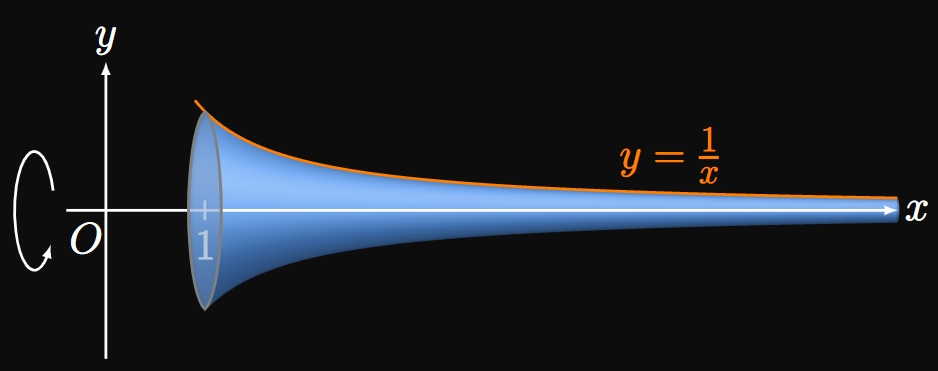

7.2 Exercise Solutions — Surface Areas of Revolution
EXERCISE 1
For
\[\ds y = e^{\sin x} \cma y = 0 \cma x = 1 \cma x = 4 \scoll \abtAxis x\]
set up an integral for
the surface area of the solid generated when the given region is revolved
around the specified axis.
Use a calculator to evaluate the integral to three decimal places.
SOLUTION
Since \(\textderiv{y}{x} = e^{\sin x} \cos x,\) the surface area of the solid is
\[
\ba
A &= \int_1^4 2 \pi e^{\sin x} \sqrt{1 + \par{e^{\sin x} \cos x}^2} \di x \nl
&= 2 \pi \int_1^4 e^{\sin x} \sqrt{1 + e^{2 \sin x} \cos^2 x} \di x \approx \boxed{44.795}
\ea
\]
EXERCISE 2
For
\[\ds y = \ln \par{x^4} \cma y = 0 \cma x = e \scoll \abtAxis x\]
set up an integral for
the surface area of the solid generated when the given region is revolved
around the specified axis.
Use a calculator to evaluate the integral to three decimal places.
SOLUTION
Let's rewrite the function as \(y = 4 \ln x,\) assuming \(x \gt 0.\)
Observe that \(4 \ln x = 0\) when \(x = 1,\)
so the region is bounded from \(x = 1\) to \(x = e.\)
With \(\textderiv{y}{x} = 4/x,\) the solid's surface area is given by
\[
\ba
A &= \int_1^e 2 \pi \par{4 \ln x} \sqrt{1 + \par{\frac{4}{x}}^2} \di x \nl
&= 8 \pi \int_1^e \sqrt{1 + \frac{16}{x^2}} \ln x \di x \approx \boxed{56.419}
\ea
\]
EXERCISE 3
For
\[\ds x = \sin^2 \par{\frac{y}{4}} \cma x = 0 \cma y = 0 \cma y = 1 \scoll \abtAxis y\]
set up an integral for
the surface area of the solid generated when the given region is revolved
around the specified axis.
Use a calculator to evaluate the integral to three decimal places.
SOLUTION
Observe that
\[\deriv{x}{y} = \frac{1}{2} \sin \par{\frac{y}{4}} \cos \par{\frac{y}{4}} = \frac{1}{4} \sin \par{\frac{y}{2}} \pd\]
Since the region is bounded from \(y = 0\) to \(y = 1,\)
the generated solid's surface area is
\[
\ba
A &= \int_0^1 2 \pi \sin^2 \par{\frac{y}{4}} \sqrt{1 + \parbr{\frac{1}{4} \sin \par{\frac{y}{2}}}^2} \di y \nl
&= 2 \pi \int_0^1 \sin^2 \par{\frac{y}{4}} \sqrt{1 + \frac{1}{16} \sin^2 \par{\frac{y}{2}}} \di y \nl
&\approx \boxed{0.130}
\ea
\]
EXERCISE 4
For
\[\ds y = e^{-x} - x + 4 \cma y = 0 \cma x = 0 \cma x = 5 \scoll \abtAxis y\]
set up an integral for
the surface area of the solid generated when the given region is revolved
around the specified axis.
Use a calculator to evaluate the integral to three decimal places.
SOLUTION
When we rotate about the \(y\)-axis,
we usually integrate with \(y.\)
But doing so would require us to solve for \(x\) in \(y = e^{-x} - x + 4,\)
which is impossible to do.
We therefore must integrate with \(x\) using \(A = \int_0^5 2 \pi x \di s,\)
where
\[
\ba
\dd s &= \sqrt{1 + \par{\deriv{y}{x}}^2} \di x \nl
&= \sqrt{1 + \par{-e^{-x} - 1}^2} \di x \nl
&= \sqrt{2 + e^{-2x} + 2e^{-x}} \di x \pd
\ea
\]
(Notice that we select \(\dd s\) to be in terms of \(x,\) with which we integrate.)
So we see
\[A = 2 \pi \int_0^5 x \sqrt{2 + e^{-2x} + 2e^{-x}} \di x \approx \boxed{115.562}\]
EXERCISE 5
For
\[\ds x = 1 + \sqrt y - \cos y \cma 0 \leq y \leq 2 \cma y = 0 \scoll \abtAxis x\]
set up an integral for
the surface area of the solid generated when the given region is revolved
around the specified axis.
Use a calculator to evaluate the integral to three decimal places.
SOLUTION
When we rotate about the \(x\)-axis,
we usually expect to integrate with \(x.\)
But doing so would require us to solve for \(y\) in \(x = 1 + \sqrt y - \cos y,\)
which is impossible to do.
Thus, we instead integrate with \(y,\) so we need all quantities in terms of \(y.\)
The surface area is therefore \(A = \int_0^2 2 \pi y \di s,\)
where
\[\dd s = \sqrt{1 + \par{\deriv{x}{y}}^2} \di y = \sqrt{1 + \par{\frac{1}{2 \sqrt y} + \sin y}^2} \di y \pd\]
(Notice that we select \(\dd s\) to be in terms of \(y,\) with which we integrate.)
We therefore find
\[A = 2 \pi \int_0^2 y \sqrt{1 + \par{\frac{1}{2 \sqrt y} + \sin y}^2} \di y \approx \boxed{21.041}\]
EXERCISE 6
For
\[\ds y = \sqrt{9 - x^2} \cma y = 0 \cma x = -2 \cma x = 2 \scoll \abtAxis x\]
calculate the exact surface area of the solid generated
by revolving the bounded region around the specified axis.
SOLUTION
Since we rotate about the \(x\)-axis and all quantities are already expressed in terms of \(x,\)
it is easiest to integrate with \(x.\)
We examine that
\[\deriv{y}{x} = \frac{-x}{\sqrt{9 - x^2}} \cma\]
so the surface area is given by
\[
\ba
A &= \int_{-2}^2 2 \pi \sqrt{9 - x^2} \sqrt{1 + \par{\frac{-x}{\sqrt{9 - x^2}}}^2} \di x \nl
&= 2 \pi \int_{-2}^2 \sqrt{9 - x^2} \sqrt{1 + \frac{x^2}{9 - x^2}} \di x \nl
&= 2 \pi \int_{-2}^2 \sqrt{9 - x^2} \sqrt{\frac{9 - x^2 + x^2}{9 - x^2}} \di x \nl
&= 2 \pi \int_{-2}^2 \sqrt{9 - x^2} \frac{3}{\sqrt{9 - x^2}} \di x \nl
&= 6 \pi \int_{-2}^2 \di x = 6 \pi (4) = \boxed{24 \pi} \approx 75.398 \pd
\ea
\]
EXERCISE 7
For
\[\ds y = 2x^3 \cma y = 0 \cma x = 0 \cma x = 2 \scoll \abtAxis{x}\]
calculate the exact surface area of the solid generated
by revolving the bounded region around the specified axis.
SOLUTION
With \(\textderiv{y}{x} = 6x^2\) and bounds from \(x = 0\) to \(x = 2,\)
the surface area is given by
\[A = \int_0^2 2 \pi \par{2x^3} \sqrt{1 + \par{6x^2}^2} \di x
= 4 \pi \int_0^2 x^3 \sqrt{1 + 36x^4} \di x \pd\]
Substituting \(u = 1 + 36x^4,\) we attain \(\dd u = 144x^3 \di x.\)
Observe that \(u = 577\) when \(x = 2,\) and \(u = 1\) when \(x = 0.\)
The integral therefore becomes
\[
\ba
A &= \frac{\pi}{36} \int_1^{577} \sqrt u \di u
= \frac{\pi}{54} \par{u^{3/2}} \intEval_1^{577} \nl
&= \boxed{\frac{\pi}{54} \parbr{(577) \sqrt{577} - 1}}
\approx 806.285 \pd
\ea
\]
EXERCISE 8
For
\[\ds y = 2x \cma y = 0 \cma x = 0 \cma x = 3 \scoll \abtAxis x\]
calculate the exact surface area of the solid generated
by revolving the bounded region around the specified axis.
SOLUTION
Because the line \(y = 2x\) is straight,
revolving the bounded region about the \(x\)-axis
produces a conical frustum.
The left radius is \(r_1 = 0,\) and the right radius is \(r_2 = 2(3) = 6.\)
The length of the line is, by the Pythagorean Theorem,
\[L = \sqrt{3^2 + 6^2} = 3 \sqrt 5 \pd\]
The surface area is therefore
\[
\ba
A &= \pi \par{r_1 + r_2} L \nl
&= \pi \par{0 + 6} \par{3 \sqrt 5} \nl
&= \boxed{18 \pi \sqrt 5} \approx 126.447 \pd
\ea
\]
Alternatively, we attain the same surface area by using calculus, as follows:
\[
\ba
A &= \int_0^3 2 \pi \par{2x} \sqrt{1 + (2)^2} \di x \nl
&= 2 \pi \sqrt 5 \int_0^3 2x \di x \nl
&= 2 \pi \sqrt 5 \par{x^2} \intEval_0^3 = 18 \pi \sqrt 5 \approx 126.447 \pd
\ea
\]
EXERCISE 9
For
\[\ds x = 8 \sqrt y \cma x = 0 \cma y = 0 \cma y = 4 \scoll \abtAxis y\]
calculate the exact surface area of the solid generated
by revolving the bounded region around the specified axis.
SOLUTION
We rotate about the \(y\)-axis, and all quantities are already expressed in terms of \(y.\)
Let's therefore proceed with using \(y.\)
With \(\textderiv{x}{y} = 4/\sqrt y,\) the surface area is given by
\[
\ba
A &= \int_0^4 2 \pi \par{8 \sqrt y} \sqrt{1 + \par{\frac{4}{\sqrt y}}^2} \di y \nl
&= 16 \pi \int_0^4 \sqrt{y + 16} \di y \nl
&= \frac{32 \pi}{3} \par{y + 16}^{3/2} \intEval_0^4 \nl
&= \boxed{\frac{32 \pi}{3} \par{20 \sqrt{20} - 64}} \approx 852.594 \pd
\ea
\]
EXERCISE 10
For
\[\ds y = \sqrt{1 + e^x} \cma y = 0 \cma x = 0 \cma x = 1 \scoll \abtAxis x\]
calculate the exact surface area of the solid generated
by revolving the bounded region around the specified axis.
SOLUTION
Because we rotate about the \(x\)-axis, then it is most logical to integrate with \(x\)
since all quantities are already expressed in terms of \(x.\)
We find
\[\deriv{y}{x} = \frac{e^x}{2 \sqrt{1 + e^x}} \pd\]
So the surface area is
\[
\ba
A &= \int_0^1 2 \pi \sqrt{1 + e^x} \sqrt{1 + \par{\frac{e^x}{2 \sqrt{1 + e^x}}}^2} \di x \nl
&= 2 \pi \int_0^1 \sqrt{1 + e^x} \sqrt{1 + \frac{e^{2x}}{4 + 4 e^x}} \di x \nl
&= 2 \pi \int_0^1 \sqrt{1 + e^x} \sqrt{\frac{4 + 4e^x + e^{2x}}{4 + 4 e^x}} \di x \nl
&= \pi \int_0^1 \sqrt{4 + 4e^x + e^{2x}} \di x \nl
&= \pi \int_0^1 \sqrt{\par{e^x + 2}^2} \di x \nl
&= \pi \int_0^1 \par{e^x + 2} \di x \nl
&= \pi \par{e^x + 2x} \intEval_0^1 \nl
&= \boxed{\pi (e + 1)} \approx 11.681 \pd
\ea
\]
EXERCISE 11
For
\[\ds y = \tfrac{1}{3} x^{3/2} \cma y = 0 \cma x = 0 \cma x = 4 \scoll \abtAxis y\]
calculate the exact surface area of the solid generated
by revolving the bounded region around the specified axis.
SOLUTION
All our quantities are expressed in terms of \(x,\) but we must rotate about the \(y\)-axis.
It would be troublesome (yet possible) to reexpress them all in terms of \(y,\)
so let's instead try to integrate with \(x.\)
With \(\textderiv{y}{x} = \tfrac{1}{2} x^{1/2},\)
the surface area is given by \(A = \int_0^4 2 \pi x \di s,\) where
\[\dd s = \sqrt{1 + \par{\tfrac{1}{2} x^{1/2}}^2} \di x = \sqrt{1 + \tfrac{1}{4} x} \di x \pd\]
We therefore have
\[A = \int_0^4 2 \pi x \sqrt{1 + \tfrac{1}{4} x} \di x \pd\]
Letting \(u = 1 + \tfrac{1}{4} x,\) we see \(\dd u = \tfrac{1}{4} \di x\)
and \(x = 4(u - 1).\)
When \(x = 0,\) \(u = 1;\) when \(x = 4,\) \(u = 2.\)
The integral therefore becomes
\[
\ba
A &= 2 \pi \int_1^2 4(u - 1) \sqrt{u} \cdot 4 \di u \nl
&= 32 \pi \int_1^2 \par{u^{3/2} - u^{1/2}} \di u \nl
&= 32 \pi \par{\tfrac{2}{5} u^{5/2} - \tfrac{2}{3} u^{3/2}} \intEval_1^2 \nl
&= \boxed{32 \pi \par{\frac{8 \sqrt 2 - 2}{5} - \frac{4 \sqrt 2 - 2}{3}}} \approx 64.721 \pd
\ea
\]
EXERCISE 12
For
\[\ds y = \tfrac{1}{4} x^2 - \tfrac{1}{2} \ln x \cma 1 \leq x \leq 2 \cma x = 0 \scoll \abtAxis y\]
calculate the exact surface area of the solid generated
by revolving the bounded region around the specified axis.
SOLUTIONIt is impossible to solve for \(x\) to express all quantities in terms of \(y.\)
We must therefore integrate with \(x.\)
Observe that
\[\deriv{y}{x} = \frac{x}{2} - \frac{1}{2x} \pd\]
The surface area is given by \(A = \int_1^2 2 \pi x \di s,\)
where
\[
\ba
\dd s &= \sqrt{1 + \par{\frac{x}{2} - \frac{1}{2x}}^2} \di x \nl
&= \sqrt{1 + \frac{x^2}{4} - \frac{1}{2} + \frac{1}{4x^2}} \di x \nl
&= \sqrt{\frac{x^2}{4} + \frac{1}{2} + \frac{1}{4x^2}} \di x \nl
&= \sqrt{\par{\frac{x}{2} + \frac{1}{2x}}^2} \di x \nl
&= \par{\frac{x}{2} + \frac{1}{2x}} \di x \pd
\ea
\]
The integral therefore becomes
\[
\ba
A &= 2 \pi \int_1^2 x \par{\frac{x}{2} + \frac{1}{2x}} \di x \nl
&= \pi \int_1^2 \par{x^2 + 1} \di x \nl
&= \pi \par{\tfrac{1}{3} x^3 + x} \intEval_1^2 \nl
&= \boxed{\frac{10 \pi}{3}} \approx 10.472 \pd
\ea
\]
EXERCISE 13
For
\[\ds x = y^{3/2} \cma x = 0 \cma y = 1 \cma y = 4 \scoll \abtAxis x\]
calculate the exact surface area of the solid generated
by revolving the bounded region around the specified axis.
SOLUTION
Although we revolve around the \(x\)-axis,
all our quantities are expressed in terms of \(y.\)
(It would be troublesome to convert them all in terms of \(x,\)
and the resulting integral is difficult to evaluate analytically.)
The surface area is therefore given by the integral \(A = \int_1^4 2 \pi y \di s,\)
where \(\textderiv{x}{y} = \tfrac{3}{2} y^{1/2}\) and
\[\dd s = \sqrt{1 + \par{\tfrac{3}{2} y^{1/2}}^2} \di y = \sqrt{1 + \tfrac{9}{4} y} \di y \pd\]
So we have
\[
A = 2 \pi \int_1^4 y \sqrt{1 + \tfrac{9}{4} y} \di y \pd
\]
Let \(u = 1 + \tfrac{9}{4} y;\) then \(\dd u = \tfrac{9}{4} \di y\)
and \(y = \tfrac{4}{9} (u - 1).\)
When \(y = 1,\) \(u = 13/4;\) when \(y = 4,\) \(u = 10.\)
So the integral becomes
\[
\ba
A &= 2 \pi \int_{13/4}^{10} \tfrac{4}{9} (u - 1) \sqrt u \cdot \tfrac{4}{9} \di u \nl
&= \frac{32 \pi}{81} \int_{13/4}^{10} \par{u^{3/2} - u^{1/2}} \di u \nl
&= \frac{32 \pi}{81} \par{\frac{2}{5} u^{5/2} - \frac{2}{3} u^{3/2}} \intEval_{13/4}^{10} \nl
&= \boxed{\frac{64 \pi}{81} \par{\frac{(10)^{5/2} - \par{13/4}^{5/2}}{5} - \frac{(10)^{3/2} - \par{13/4}^{3/2}}{3}}} \nl
&\approx 126.220 \pd
\ea
\]
EXERCISE 14
For
\[\ds y = e^x \cma y = 0 \cma x = 0 \cma x = 1 \scoll \abtAxis x\]
calculate the exact surface area of the solid generated
by revolving the bounded region around the specified axis.
SOLUTION
Because \(\textderiv{y}{x} = e^x\)
and the region is bounded between \(x = 0\) and \(x = 1,\)
the surface area is given by
\[A = \int_0^1 2 \pi e^x \sqrt{1 + \par{e^x}^2} \di x = \int_0^1 e^x \sqrt{1 + e^{2x}} \di x \pd\]
To evaluate this integral, we substitute \(u = e^x.\)
Then \(\dd u = e^x \di x;\)
also, \(u = 1\) when \(x = 0,\) and \(u = e\) when \(x = 1.\)
We therefore attain
\[A = 2 \pi \int_1^e \sqrt{1 + u^2} \di u \pd\]
Substituting \(u = \tan \theta,\)
we get \(\dd u = \sec^2 \theta \di \theta.\)
(See Section 6.3
to review selecting trigonometric substitutions.)
When \(u = 1,\) \(\theta = \pi/4;\)
when \(u = e,\) \(\theta = \atan e.\)
Let's denote \(\beta = \atan e\) to reduce the following clutter.
The integral becomes
\[
\ba
A &= 2 \pi \int_{\pi/4}^{\beta} \par{\sec \theta} \sec^2 \theta \di \theta
= 2 \pi \int_{\pi/4}^{\beta} \sec^3 \theta \di \theta \nl
&= 2 \pi \parbr{\tfrac{1}{2} \sec \theta \tan \theta + \tfrac{1}{2} \ln \abs{\sec \theta + \tan \theta}} \intEval_{\pi/4}^{\beta} \nl
&= \pi \par{\sec \beta \tan \beta + \ln \abs{\sec \beta + \tan \beta}
- \parbr{\par{\sqrt 2} (1) + \ln \par{\sqrt 2 + 1}}} \pd
\ea
\]
Because \(\tan^2 \beta + 1 = \sec^2 \beta\) and \(\tan \beta = e,\)
we have \(\sec \beta = \sqrt{e^2 + 1}.\)
Hence, we obtain
\[A = \boxed{\pi \parbr{e \sqrt{e^2 + 1} + \ln \par{e + \sqrt{e^2 + 1}} - \sqrt 2 - \ln \par{\sqrt 2 + 1}}} \approx 22.943 \pd\]
EXERCISE 15
For
\[\ds y = \sin 2x \cma y = 0 \cma x = 0 \cma x = \frac{\pi}{2} \scoll \abtAxis x\]
calculate the exact surface area of the solid generated
by revolving the bounded region around the specified axis.
SOLUTION
With \(\textderiv{y}{x} = 2 \cos 2x\)
and bounds from \(x = 0\) to \(x = \pi/2,\)
the solid's surface area is given by
\[
\ba
A &= \int_0^{\pi/2} 2 \pi (\sin 2x) \sqrt{1 + (2 \cos 2x)^2} \di x \nl
&= 2 \pi \int_0^{\pi/2} (\sin 2x) \sqrt{1 + 4 \cos^2 2x} \di x \pd
\ea
\]
Substituting \(u = 2 \cos 2x,\) we see \(\dd u = -4 \sin 2x \di x.\)
When \(x = 0,\) \(u = 2;\)
when \(x = \pi/2,\) \(u = -2.\)
The integral therefore becomes
\[
\ba
A &= -\frac{\pi}{2} \int_2^{-2} \sqrt{1 + u^2} \di u
= \frac{\pi}{2} \int_{-2}^2 \sqrt{1 + u^2} \di u \nl
&= \pi \int_0^2 \sqrt{1 + u^2} \di u \cma
\ea
\]
where the last step is true because \(\sqrt{1 + u^2}\) is even.
(Recognizing this property simplifies the following calculations.)
Next we perform the trigonometric substitution \(u = \tan \theta,\)
from which \(\dd u = \sec^2 \theta \di \theta.\)
When \(u = 0,\) \(\theta = 0;\) when \(u = 2,\) \(\theta = \atan 2.\)
For cleanliness, let \(\beta = \atan 2.\)
We therefore attain
\[
\ba
A &= \pi \int_0^\beta \sec^3 \theta \di \theta \nl
&= \pi \par{\tfrac{1}{2} \sec \theta \tan \theta + \tfrac{1}{2} \ln \abs{\sec \theta + \tan \theta} } \intEval_0^\beta \nl
&= \pi \par{\tfrac{1}{2} \sec \beta \tan \beta + \tfrac{1}{2} \ln \abs{\sec \beta + \tan \beta}}
- (0) \pd
\ea
\]
Because \(\tan^2 \beta + 1 = \sec^2 \beta\) and \(\tan \beta = 2,\)
we have \(\sec \beta = \sqrt 5\) and therefore
\[
\ba
A &= \pi \par{\tfrac{1}{2} (2) \sqrt 5 + \tfrac{1}{2} \ln \abs{2 + \sqrt 5}} \nl
&= \boxed{\pi \sqrt 5 + \frac{\pi}{2} \ln \par{2 + \sqrt 5}} \approx 9.292 \pd
\ea
\]
EXERCISE 16
By revolving the semicircle \(y = \sqrt{r^2 - x^2}\) about the \(x\)-axis,
prove that a sphere of radius \(r\) has a surface area of
\(A = 4 \pi r^2.\)
SOLUTION
We rotate the entire semicircle—that is, for \(-r \leq x \leq r\)—about the \(x\)-axis
and calculate the surface area \(A\) of the generated solid.
Differentiating shows
\[\deriv{y}{x} = \frac{-x}{\sqrt{r^2 - x^2}} \pd\]
Remembering that \(r\) is a constant, we find
\[
\ba
A &= \int_{-r}^r 2 \pi \sqrt{r^2 - x^2} \sqrt{1 + \par{\frac{-x}{\sqrt{r^2 - x^2}}}^2} \di x \nl
&= 2 \pi \int_{-r}^r \sqrt{r^2 - x^2} \sqrt{1 + \frac{x^2}{r^2 - x^2}} \di x \nl
&= 2 \pi \int_{-r}^r \sqrt{r^2 - x^2} \sqrt{\frac{r^2 - x^2 + x^2}{r^2 - x^2}} \di x \nl
&= 2 \pi \int_{-r}^r r \di x = 2 \pi r (x) \intEval_{-r}^r \nl
&= 2 \pi r(2r) = 4 \pi r^2 \cma
\ea
\]
as requested.
EXERCISE 17
Let \(f\) be a positive, smooth function over \([a, b].\)
Region \(R\) is the region bounded by the graph of \(y = f(x),\)
the \(x\)-axis, and the lines \(x = a\) and \(x = b.\)
Solid \(S\) is the solid generated by revolving \(R\) around the \(x\)-axis.
Prove that the surface area of \(S\) is at least \(2 \pi\) times greater than the area of \(R.\)
SOLUTION
The area of \(R\) is
\[A_R = \int_a^b f(x) \di x \pd\]
The surface area of \(S\) is
\[A_S = \int_a^b 2 \pi f(x) \sqrt{1 + [f'(x)]^2} \di x \pd\]
Examine that \(2 \pi \sqrt{1 + [f'(x)]^2} \geq 2 \pi,\) so
\[\underbrace{\int_a^b 2 \pi f(x) \sqrt{1 + [f'(x)]^2} \di x}_{A_S}
\geq 2 \pi \int_a^b f(x) \di x \gt \underbrace{\int_a^b f(x) \di x}_{A_R} \pd\]
Hence, revolving a region produces a solid whose surface area is no less than
\(2 \pi\) times the region's area.
EXERCISE 18
A solid is generated by rotating the region bounded by the infinite curve \(y = e^{-x}\) in the first quadrant
about the \(x\)-axis.
Calculate the surface area of this solid.
SOLUTION
Since \(\textderiv{y}{x} = -e^{-x},\) the surface area of the generated solid is
\[A = \int_0^\infty 2 \pi e^{-x} \sqrt{1 + \par{-e^{-x}}^2} \di x
= 2 \pi \int_0^\infty e^{-x} \sqrt{1 + e^{-2x}} \di x \pd\]
Substituting \(u = e^{-x},\) we get \(\dd u = -e^{-x} \di x.\)
When \(x = 0,\) \(u = 1;\) when \(x = \infty,\) \(u = 0.\)
So the integral becomes
\[A = - 2 \pi \int_1^0 \sqrt{1 + u^2} \di u = 2 \pi \int_0^1 \sqrt{1 + u^2} \di u \pd\]
Letting \(u = \tan \theta\) results in \(\dd u = \sec^2 \theta \di \theta.\)
When \(u = 0,\) \(\theta = 0;\) when \(u = 1,\) \(\theta = \pi/4.\)
Hence, we attain
\[
\ba
A &= 2 \pi \int_0^{\pi/4} \par{\sec \theta} \sec^2 \theta \di \theta
= 2 \pi \int_0^{\pi/4} \sec^3 \theta \di \theta \nl
&= 2 \pi \par{\tfrac{1}{2} \sec \theta \tan \theta + \tfrac{1}{2} \ln \abs{\sec \theta + \tan \theta} } \intEval_0^{\pi/4} \nl
&= 2 \pi \parbr{\tfrac{1}{2} \par{\sqrt 2} (1) + \tfrac{1}{2} \ln \par{\sqrt 2 + 1}} - 0 \nl
&= \boxed{\pi \parbr{\sqrt 2 + \ln \par{\sqrt 2 + 1}}} \approx 7.212 \pd
\ea
\]
EXERCISE 19
Gabriel's Horn is the solid generated by rotating the region
bounded by \(y = 1/x,\) the \(x\)-axis, and the line \(x = 1\) about the \(x\)-axis
(Figure 7).
Show that the solid has infinite surface area but finite volume.

SOLUTION
The region is bounded from \(x = 1\) to \(x = \infty.\)
Using the Disk Method (from Section 5.3),
the horn's volume is
\[
\ba
V &= \int_1^\infty \pi \par{\frac{1}{x}}^2 \di x
= \lim_{k \to \infty} \int_1^k \frac{\pi}{x^2} \di x \nl
&= \lim_{k \to \infty} \par{-\frac{\pi}{x}} \intEval_1^k = - \par{0 - \pi} = \pi \pd
\ea
\]
Thus, Gabriel's Horn has a finite volume.
Now we move on to its surface area: With \(\textderiv{y}{x}\) \(= -1/x^2,\) the horn's surface area is given by
\[
\ba
A &= \int_1^\infty 2 \pi \par{\frac{1}{x}} \sqrt{1 + \par{-\frac{1}{x^2}}^2} \di x \nl
&= \int_1^\infty 2 \pi \par{\frac{1}{x}} \sqrt{1 + \frac{1}{x^4}} \di x \pd
\ea
\]
Because \(\sqrt{1 + 1/x^4} \geq\) \(\sqrt 1 = 1,\)
we have
\[\int_1^\infty 2 \pi \par{\frac{1}{x}} \sqrt{1 + \frac{1}{x^4}} \di x
\geq \int_1^\infty 2 \pi \par{\frac{1}{x}} \di x \pd \]
The right-hand integral becomes the limit
\[\lim_{k \to \infty} \par{2 \pi \ln x} \intEval_1^k = \infty \pd\]
Since \(\int_1^\infty 2 \pi \par{\frac{1}{x}} \di x\) diverges,
the Comparison Test for Improper Integrals
(from Section 6.5)
asserts that
\(\int_1^\infty 2 \pi \par{\frac{1}{x}} \sqrt{1 + \frac{1}{x^4}} \di x\) also diverges.
Accordingly, Gabriel's Horn has an infinite surface area.